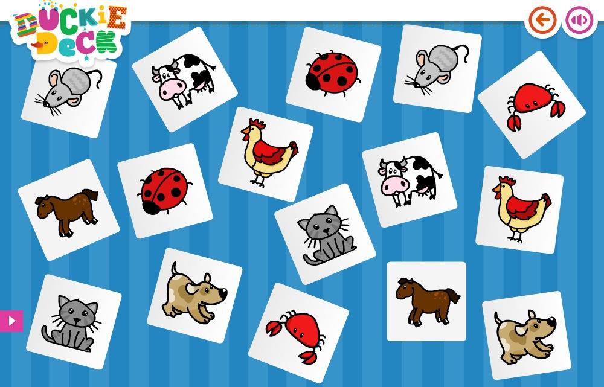
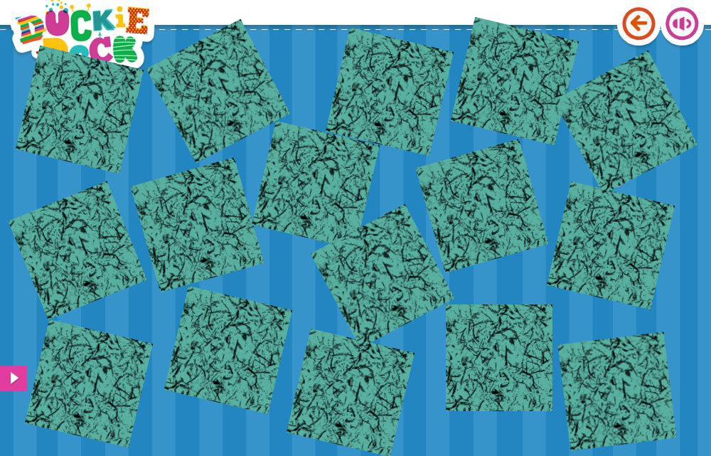
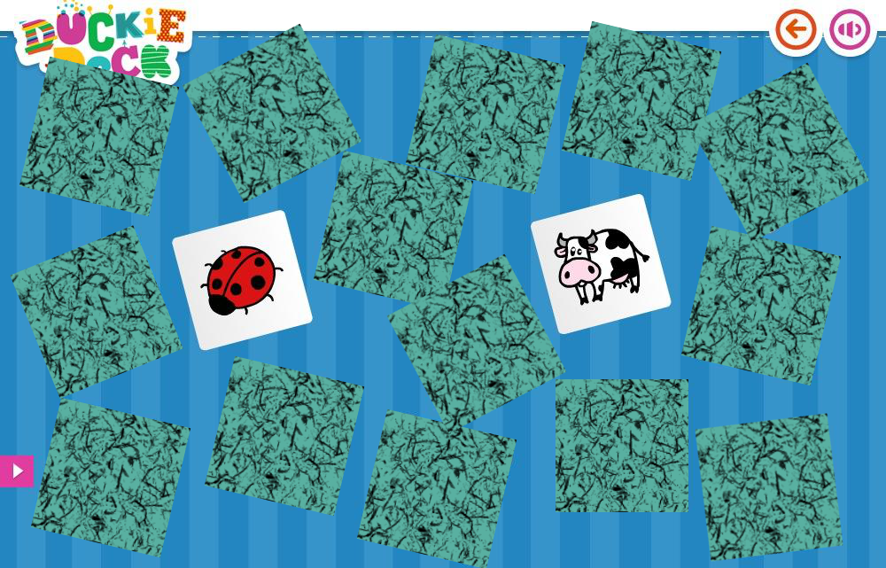
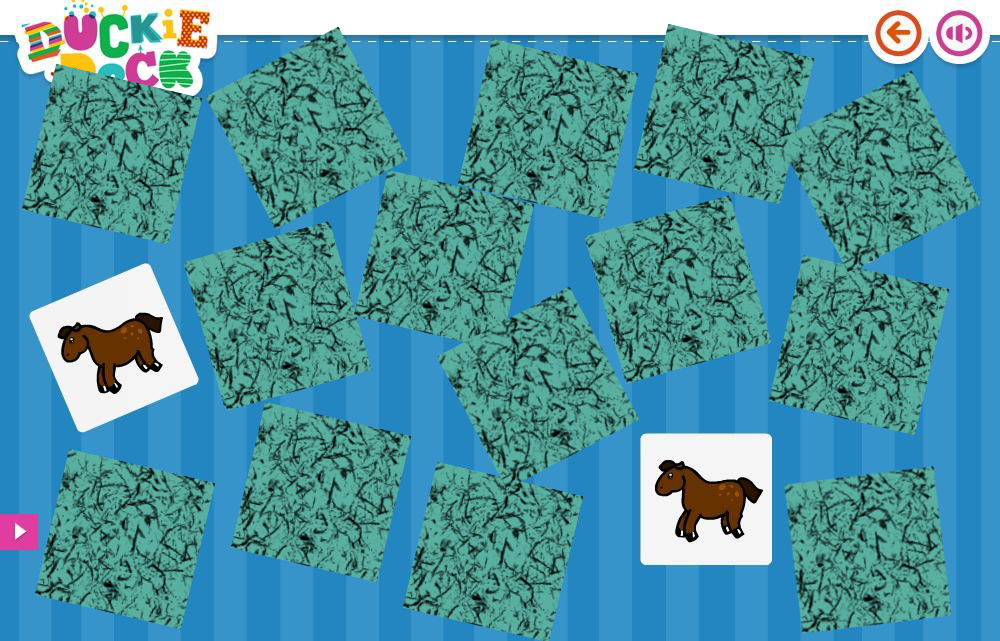
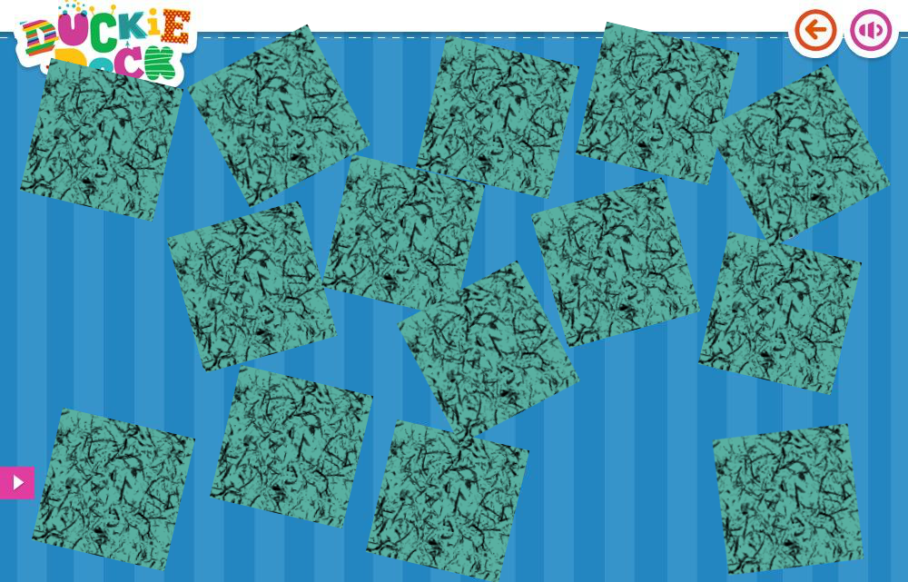
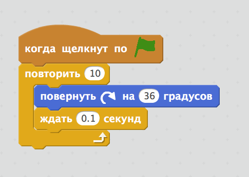
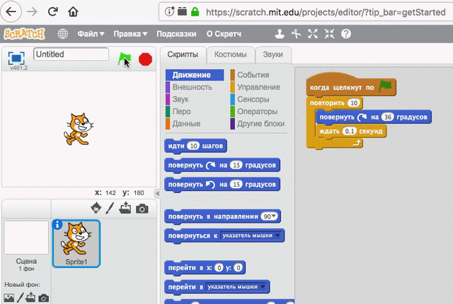
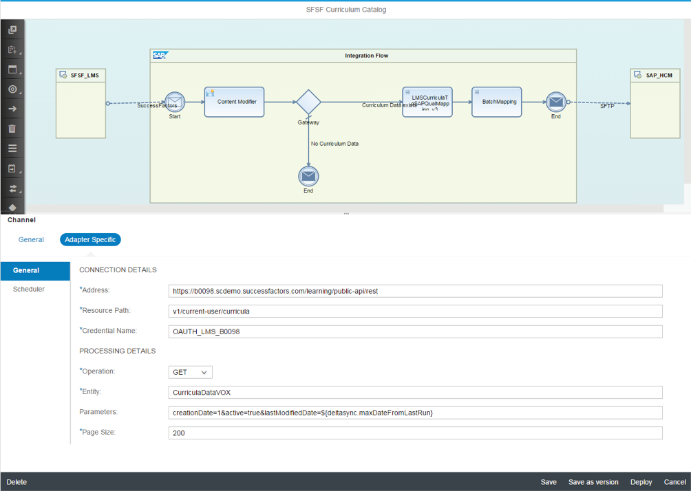
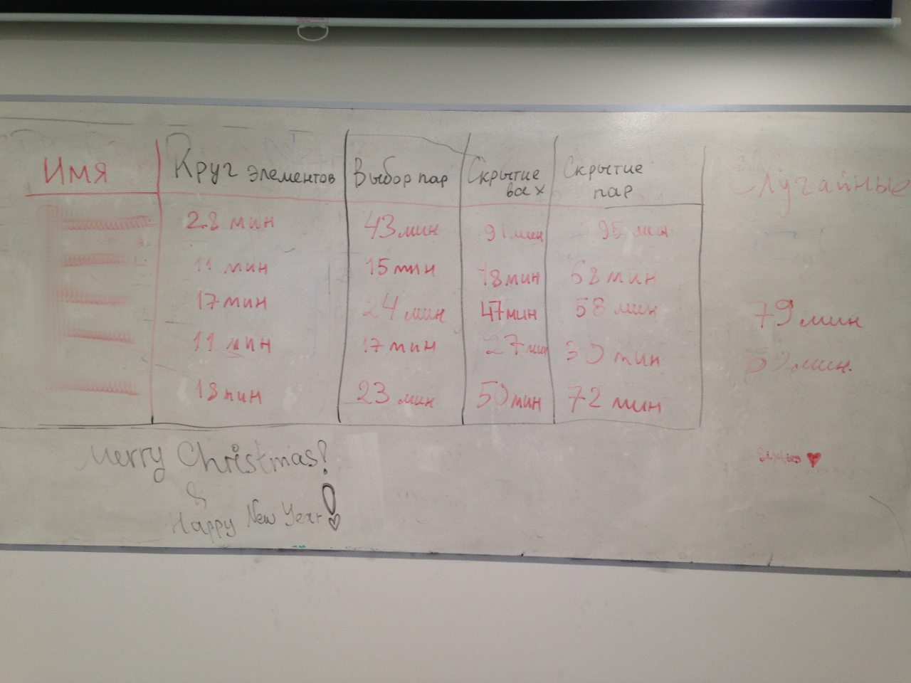

В новостях...
Обучение детей программированию
2019-02-04 00:00

В этой статье Михаил делится своим опытом обучения детей программированию.
Он расскажет о следующем:
- организация процесса обучения
- программа обучения
- игра на память
- инструмент программирования
- уроки
- результаты и планы
Организация процесса обучения
Обучение проходит в рамках социальной ответственности бизнеса: компания предоставляет помещение с оборудованием, а также объединяет сотрудников, желающих попробовать себя в роли преподавателей, с сотрудниками, желающими обучить своих детей. Всё это исключительно на добровольной основе.
Потенциальных преподавателей разбивают по группам таким образом, чтобы группа из трёх преподавателей состояла из одного опытного и двух новичков. Одна группа преподавателей ведёт одну группу учеников. Учеников разбивают по возрасту и навыкам.
В 2018-м я второй раз участвовал в программе обучения детей в возрасте примерно десяти лет. Наша группа работала с октября по декабрь 2018-го по субботам с 10:00 до 12:00. Пользуясь служебным положением, я также затащил на курсы и свою жену.
Программа обучения
Когда я участвовал первый раз, наша группа обучала детей программированию довольно бесцельно: мы придумывали простейшие задания на урок для объяснения операторов. В результате в конце обучения у нас не было ничего конкретного, что можно было бы оценить, чем похвастаться и что проанализировать.
В этот второй раз я решил, что мы с детьми реализуем так называемую игру на память. Критерием успешности обучения я определил следующее условие: каждый ученик к концу курса самостоятельно создаёт простейшую игру на память с нуля за 1 час.
Для достижения этого критерия я решил проверить утверждение "Повторение - мать учения", поэтому каждый урок мы создавали всё с нуля. Подчеркну, что мы ничего не сохраняли в учётной записи учеников. Задача была в сохранении навыка создания игры в голове, не в компьютере.
Игра на память
Давайте рассмотрим, что представляет собой игра на память.
1) В простейшем случае у нас есть 16 карт, причём уникальных лишь 8, остальные 8 являются их парами.

В представленном изображении у нас есть лишь две карты с котом, собакой и т.д..
2) В начале игры мы перемешиваем карты и раскладываем их рубашкой вверх.

3) Первый из участников игры открывает две карты.

4) Если карты различаются, возвращаем их в исходное положение: кладём рубашкой вверх.
5) Следующий участник игры открывает другую пару карт.

6) Если карты совпадают, убираем их с игрового поля.

Цель игры в том, чтобы убрать все карты с поля. Игра в данном виде не включает соревнование, поэтому играть можно одному человеку.
С одной стороны, игра на память довольно проста, с другой стороны, реализация игры затрагивает основную функциональность, необходимую для создания любой более-менее сложной игры:
- создание элементов
- их расстановка на поле
- выбор элементов
- сравнение выбранных элементов
- скрытие совпадающих элементов
Инструмент программирования
В качестве инструмента мы использовали среду Scratch. Она рассчитана на обучение детей программированию, поэтому каждое действие, каждый оператор в ней представлен графически.
Например, следующим скриптом можно повернуть кота на 360 градусов за секунду:

Вот так выглядит результат:

Замечу, что это довольно успешное решение для представления кода графически. Например, платное решение, продвигаемое нынче компанией SAP, предполагает использование так называемых кубиков для программирования:

Тут можно лишь ввести в нужные поля нужные значения. Если потребуется что-то нестандартное, то поможет лишь скрипт, который представлен опять же кубиком.
По личному опыту скажу, что решение Scratch не тормозит от слова совсем, чего не скажешь о решении SAP.
Первый урок
Первый урок являлся вводным, поэтому компьютеры мы не использовали.
План был следующим:
- Познакомиться
- Сыграть в игру на память
- Изучить понятие алгоритма
- Написать алгоритм игры
- Проанализировать урок
1) Знакомство
Преподаватели с учениками встают в круг. Это уравнивает всех и делает каждого участником команды.
Первый участник называет своё имя и рассказывает о том, почему он решил посетить этот курс. Второй и последующие участники сначала повторяют имя и рассказ каждого предыдущего участника, после чего называют своё имя и рассказывают.
Примерно так это выглядит:
- Вася: "Меня зовут Вася, я хочу изучить Scratch, потому что меня заставил папа"
- Дима: "Это Вася, заниматься Scratch'ем его заставляет папа. Меня зовут Дима, и это мой четвёртый год Scratch'а"
- Оля: "Это Вася, его заставляют родители. Это Дима, он практически ветеран Scratch'а. Меня зовут Оля, я первый год преподаю, буду учиться вместе со всеми"
Данный формат знакомства преследует следующие цели:
- Знакомство
- Каждый участник команды должен знать по имени остальных участников команды
- Общее пространство
- Все участники в круге, а не за рабочими местами, что уменьшает отвлечение на игры в компьютере
- Равенство
- И преподаватели, и ученики в одном круге, что уравновешивает всех в качестве участников команды без иерархии
- Внимание
- Каждый участник команды должен внимательно слушать остальных участников, чтобы правильно повторить сказанное ими
- Обратная связь
- Каждый участник команды должен максимально чётко излагать свою мысль, иначе остальные просто не смогут её повторить
- Веселье
- Проблемы с запоминанием имён всех веселят
2) Игра на память в карты
- Берём две колоды карт и выбираем из них по 8 одинаковых
- Раскладываем карты в сетку 4 x 4 рубашкой вверх на столе
- Ученики встают вокруг стола
- Каждый ученик по очереди переворачивает пару карт
- Если карты совпали, то убираем их с поля
- Если карты различаются, то переворачиваем их рубашкой вверх
Ученикам очень нравится играть в настольные игры. В ходе игры преподаватели проговаривают то, что происходит.
После пары партий переходим к изучению понятия алгоритма.
3) Понятие алгоритма
- Спрашиваем сначала учеников, даём возможность высказаться, узнаём уровень каждого ученика
- При необходимости поправляем высказывания, если они близки к ожидаемому ответу
- Предлагаем написать алгоритм перевода человека из состояния "стоит за дверью кабинета" в состояние "работает за компьютером в кабинете"
Ученикам очень нравится подходить к доске и писать на ней, поэтому по очереди вызываем каждого ученика, чтобы он писал по одному пункту алгоритма. Самого активного ученика используем в качестве исполнителя алгоритма.
4) Алгоритм игры
Предлагаем написать алгоритм игры, опять вызываем каждого добавлять по одному пункту на доске. После завершения описания алгоритма ещё раз играем с картами, но на этот раз каждый ученик должен проговаривать шаг алгоритма.
Выглядит это примерно так:
- Вася: "Раскладываем 16 карт рубашкой вверх"
- Дима: "Переворачиваем пару карт"
- Паша: "Если две карты различаются, переворачиваем их рубашкой вверх"
- Филипп: "Переворачиваем пару карт"
- Миша: "Если две карты совпадают, убираем их с поля"
5) Анализ урока
На этом первый урок заканчивается, и у преподавателей появляется возможность обсудить как свои впечатления об уроке, так и об учениках, выработать подходы к тихоням и активистам, договориться о дальнейших планах на следующие уроки.
У нас были следующие решения:
- Рассаживать тихонь и активистов через одного, чтобы соблюсти баланс шума и тишины. Иначе группа активистов создаёт очаг бури, а группа тихонь - очаг пустыни, что замедляет процесс обучения.
- Требовать от учеников точности, т.к. активисты любят кривляться, что плохо влияет на дисциплину.
Второй и третий уроки
Последующие уроки мы опять же начинали с разминки: вставали в круг, называли имя и рассказывали, кто что сделал. А если не сделал, то почему. Как и прежде, каждый участник сначала повторял сказанное предыдущими и лишь затем говорил о себе.
На втором уроке мы создавали требования для элемента игрового поля и пытались создать этот элемент в Scratch. Это вполне удалось.
На третьем уроке мы пытались создать 16 элементов и расположить их в сетке 4x4. Тут мы застопорились, т.к. ученики не смогли понять систему координат, чтобы расположить 16 элементов в сетке. Стало очевидно, что планы уроков являются лишь планами, а действительность вносит свои изменения.
У нас было два пути решения проблемы с системой координат:
- Продолжать обучать системе координат с риском не успеть создать игру до конца курса
- Изменить требования к игре таким образом, чтобы система координат была не нужна
Мы решили пойти вторым путём, т.к. мы всё-таки не школа и цель у нас была научить создавать игру, т.е. применять знания на практике, а не в теории. Поэтому сетку элементов 4x4 мы решили заменить кругом из 16 элементов.
Данное решение привело меня к следующим выводам:
- Для решения задачи часто можно найти более простой путь
- Этот путь легче для понимания, хоть и менее гибкий
- Перейти на сложный путь для увеличения гибкости можно позже, когда это будет действительно необходимо
- Упрощение приближает к конечной цели, усложнение отдаляет от неё
Четвёртый и последующие уроки
С четвёртого урока мы отменили стадию написания требований, т.к. она начала занимать бОльшую часть урока: мы снова сделали уклон на практику, а не теорию, чтобы уложиться в сроки. На этот раз все требования были написаны заранее и выданы "сверху". Но всё равно их никто не читал.
Четвёртый и пятый уроки мы потратили на создание 16 элементов в виде круга, выделение пары элементов и проверку на их совпадение.
С шестого урока и до девятого включительно мы каждый раз воссоздавали игру с нуля. С каждым разом это происходило всё быстрее и быстрее, поэтому с восьмого урока мы ввели турнирную таблицу, где записывали этапы создания игры и время каждого ученика.
Последний урок
К последнему уроку все справлялись с созданием игры с нуля более-менее самостоятельно за час-два.
Такова турнирная таблица последнего урока (имена скрыты):

А ниже можно посмотреть на создание игры на память в Scratch ученика, который создал игру быстрее всех: за 30 минут.
Результаты и планы
Результат обучения превзошёл мои ожидания:
- трое учеников успели примерно за час или быстрее
- двое примерно за полтора часа или быстрее
В этом году я планирую провести обучение не с помощью Scratch, а с использованием инструментария Opensource Game Studio: ученики будут работать с Lua, Git и GitHub Pages.
На этом мы заканчиваем статью об опыте Михаила по обучению детей программированию.